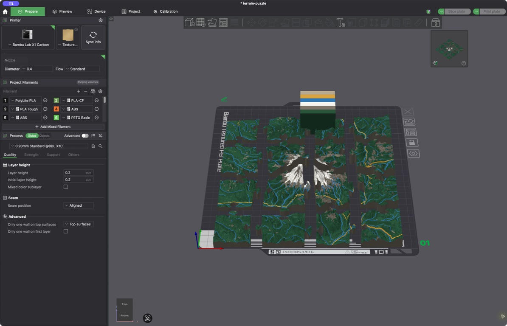

Turn any place into a printable topographic puzzle.
TopoSaic is a free desktop app that turns real terrain into printable
puzzles. Pick a place, shape the model beside a live 3D preview — relief,
colors, roads, railways, lifts, trails, water, buildings — and export
watertight jigsaw pieces as STL and color 3MF. Everything runs on your
machine.
The finished job replaces the live elevation preview with generated terrain, mapped surface classes, and print-ready output.
Local-first, from map to model. TopoSaic downloads public
map tiles, builds the model on your machine, and saves files where you
choose. No account, no upload — nothing leaves your computer.
Slicer examples
Four places, five slicer views.
These Bambu Studio captures show color 3MF files from completed TopoSaic jobs: three 4×4 puzzles with all 16 pieces separated, plus two views of a solid urban model around Shibuya Station. Every model uses real elevation, land-cover, and OpenStreetMap data.
Mount Rainier · 16 color pieces arranged in Bambu StudioMatterhorn · 16 color pieces arranged in Bambu StudioGrand Canyon · 16 color pieces arranged in Bambu StudioShibuya Station · the full solid urban model from aboveShibuya Station · an angled view of the buildings and transport lines
What it makes
Real terrain, print-ready.
Every model is watertight and drawn from public elevation, land-cover, and OpenStreetMap data — cached locally so repeat tweaks reuse the same download.
🧩
Watertight puzzle pieces
Round jigsaw tabs and sockets with narrow-necked knobs, like a standard jigsaw. Layouts run from 2×2 to 16×16 — the default 10×10 makes 100 pieces.
🌐
Worldwide elevation
Worldwide Mapzen elevation, plus sharper Mapterhorn regional tiles with a finest-detail mode that targets 0.25 m samples for areas up to 2 km wide. Every download caches on your machine.
🛰️
Live 3D relief preview
A preview appears in seconds — drag to orbit, scroll or pinch to zoom. It shows terrain height at true print scale, oriented to match the map, and swaps in the full-detail mesh when the job finishes.
🎨
Color relief
10 m ESA WorldCover satellite data paints the model: tree cover, bare ground, snow, and water become editable forest, rock, snow, and water colors in the exported 3MF.
🛣️
Mapped lines & water
Choose road detail, draw railways and aerial lifts as separate layers, or import GPX and KML trails. Rivers, streams, and canals sit flush with the terrain; bridges span ravines instead of dropping into them.
🏙️
Buildings
Raises OpenStreetMap footprints by tagged height, then floor count, then an 8 m default — with their own editable roof-and-wall material and straight mapped edges.
🖨️
Print-ready formats
Exports binary STL and standards-based 3MF with per-triangle colors. Roads rise by one configurable print layer; STL stays single-color but keeps the raised geometry.
💾
Saved, local, resilient
Save named setups, move them between machines as JSON, and inspect or clear each map cache. Jobs and downloads stay local; failed map requests never become valid cache entries.
Surface controls
Put each mapped line where it belongs.
Roads, railways, aerial lifts, imported trails, and water have their own controls. Fold rail and lift colors into another layer when filament slots matter, or keep each one distinct.
Tune road detail and height, floating or supported bridges, railways, aerial lifts, and their print colors in one place.
Wall mounting
Hang the finished terrain with printed hardware.
Cut a blind mount into the full terrain tile or display base, then export the matching wall-side part. TopoSaic checks the backing depth and keeps the mount below the visible face.
🧱
Three mount styles
Choose straight pin sockets, angled slide-lock pin sockets, or the recommended French-cleat receiver. A full-width cleat spreads the load across the tile or base.
🖨️
Matching print files
Each job can include a matching peg or cleat on a screw plate as STL and 3MF. The receiver and wall hardware share the same size and fit settings.
🔩
Screw and fit controls
Set engagement depth, wall offset, fit clearance, screw-hole size, countersink depth, and screw-head clearance. Wide mounts can add one screw near each end.
📐
Cleat alignment spacer
French-cleat jobs include a thin spacer with matching screw pilots. Place the frames edge to edge to align split bases, terrain tiles, or a full super-tile wall.
French cleats spread the load across the model and slide toward map north to lock.Pin mounts can use one or two straight or angled sockets cut into the terrain.
Set the mount position, engagement, plate thickness, and finished wall gap.Fine-tune the printed fit and use countersunk or plain screw holes with an optional wide-mount layout.
Super-tile mode
Bigger than your build plate.
Export a grid of up to 12×12 print passes as one continuous terrain set. The map draws the full grid before export, anchored at the top-left or center tile. Every tile shares the same elevation datum and vertical scale, so the same real elevation prints at the same height on every tile.
Set the map center beside the full super-tile controls, then export a straight 4×3 mosaic under one shared height frame. Center anchoring keeps a real tile at the chosen point.
🧭
Tile by tile, or all at once
North, south, east, and west buttons step the selection one full tile; the auto grid exports every tile in one pass. Straight tile bounds keep the whole set aligned.
🔗
Interlocking edges
Optional external tabs and sockets join shared edges between terrain tiles — the full set still keeps a flat outside border.
🖼️
Split trays
The tray follows the grid: one outer frame, split into matching printable parts with open joined edges — or give each tile its own complete framed tray.
Three ways to export
Puzzle, solid, or contour tray.
🧩
Puzzle
Watertight jigsaw pieces from 2×2 to 16×16. Round knobs with narrow necks assemble into the full relief map.
⛰️
Solid terrain
The same mapped relief as one watertight STL and 3MF, with a straight outer edge and no puzzle seams.
🗺️
Shallow tray
A flat well of smooth, equal-height contour inlays, with the place name and coordinates raised on the front lip. Exports its own watertight STL and color 3MF.
Export a full slicer project, painted colors without imported presets, or a plain geometry-only 3MF.

Straight into the slicer: project output keeps the pieces, mapped materials, filament colors, and purge settings for Bambu Studio and OrcaSlicer.
Printing in color? The color printing guide covers setting the palette, choosing which filament each layer prints from, and importing cleanly into Bambu Studio or OrcaSlicer.
Get TopoSaic
Just download the desktop app.
Install the app, pick a place, and print a puzzle. The whole engine runs on your machine with no account. Grab the latest from TopoSaic Releases.
🪟 Windows x64
.exe setup · .msi installer
Uses the Universal CRT that Windows 10 and 11 include — no Visual C++ Redistributable. GUI subsystem, so no console window ever opens; fetches Microsoft's WebView2 bootstrapper only if the system lacks WebView2.
🍎 macOS (Apple silicon)
.dmg disk image · .app.zip
Signed with a Developer ID certificate, Apple-notarized, with stapled tickets — opens without Gatekeeper warnings.
The desktop app keeps SQLite and generated jobs in its standard application-data directory, and opens a native Save As dialog for every file — it never drops files into Downloads without asking. On launch it checks for a newer release and shows a signed update notice; updates install in the app, and the check sends no project or location data.
For developers
Build from source.
Most people don't need this — download the desktop app instead. The steps below are for developers who want to run or modify TopoSaic. Requires Rust 1.96+ and Node.js 22.13+.
Browser dev mode
Start the Rust API, then the web UI in a second terminal:
# terminal 1 — Rust API on http://127.0.0.1:8787$ cargo run -p toposaic-api
# terminal 2 — website on http://127.0.0.1:3100$ npm install
$ npm run dev
Desktop app
The Tauri app starts the Rust engine in-process, so it needs no second terminal:
$ npm install
$ npm run tauri dev # develop$ npm run tauri build # build installers
Set TOPOSAIC_DATA_DIR to move SQLite and generated jobs off the default data directory, and TOPOSAIC_CACHE_DIR to relocate the downloaded map cache.